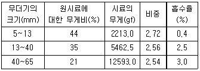
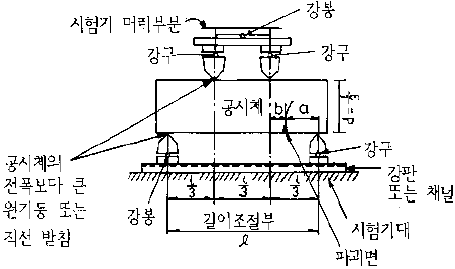

콘크리트기능사 (2002-01-27 기출문제)
1과목: 콘크리트재료
1. 잔골재는 깨끗하고 강도가 커야 하는데, 유해물로서 점토덩어리를 함유하고 있을때 허용함유량은 (전 시료에 대한 최대무게비) 얼마인가?
- 1%
- 2%
- 3%
- 4%
(정답률: 66%)

2. 조립율이 3.0인 잔골재 0.2m3와 조립율이 7.0인 0.3m3의 굵은 골재를 혼합한 경우의 조립율은 얼마인가?
- 4.2
- 4.6
- 5.0
- 5.4
(정답률: 48%)
3. 콘크리트에서 일반적인 경우 굵은 골재의 최대 치수는 다음중 어느 것을 표준으로 하는가?
- 25mm
- 40mm
- 60mm
- 100mm
(정답률: 43%)
4. 다음표는 굵은 골재의 평균비중 및 흡수율의 계산 예이다. 이 표를 보고 평균 흡수율을 구하면?

- 1.⑤%
- 1.68%
- 1.95%
- 2.00%
(정답률: 31%)
5. 다음 시멘트 저장 방법으로 부적당한 것은?
- 지상에서 30cm 이상 높은 마루에 저장한다.
- 습기가 차단되도록 방수되는 창고에 저장한다.
- 시멘트는 13포 이상 쌓토록 한다.
- 시멘트는 입하순으로 사용한다.
(정답률: 90%)
6. 중용열 포오틀랜드 시멘트를 필요로 하는 공사는 어느것인가?
- 일반 구조물 콘크리트
- 수중 콘크리트
- 한중 콘크리트
- 댐 콘크리트
(정답률: 78%)
7. 콘크리트에 AE제를 넣을 경우 설명이 잘못된 것은?
- 강도가 증가된다.
- 단위수량을 줄일 수 있다.
- 워커 빌리티가 개선된다.
- 굳은 뒤에 수밀성과 내구성이 커진다.
(정답률: 60%)
8. 시멘트가 응결할 때 화학적반응에 의하여 수소가스를 발생시켜 모르타르 또는 콘크리트속에 아주 작은 기포를 생기게 하는 혼화제로 알루미늄가루를 사용하며 프리팩트 콘크리트용 그라우트나 PC공 그라우트에 사용하면 부착을 좋게 하는 것은?
- 발포제
- 방수제
- 촉진제
- 급결제
(정답률: 86%)
9. 포졸란은 천연산과 인공산으로 나누는데 다음 중 천연산이 아닌 것은?
- 규산백토
- 고로슬래그
- 규조토
- 화산재
(정답률: 86%)
10. 플라이애시 시멘트의 장점에 속하지 않는 것은?
- 수화열이 적고 장기강도가 크다.
- 콘크리트의 워커빌리티가 좋다.
- 조기강도가 상당히 크다.
- 단위수량을 감소시킬 수 있다.
(정답률: 68%)
11. 서중 콘크리트의 시공이나 레디믹스트 콘크리트에서 운반거리가 먼 경우 연속 콘크리트를 칠 때 작업 이음이 생기지 않도록 할 경우에 사용하면 효과가 있는 혼화제는 어느 것인가?
- 분산제
- 지연제
- 증진제
- 응결경화 촉진제
(정답률: 91%)
12. 표면건조 포화상태의 잔골재 500gf을 노건조시켰더니 480gf였다면 흡수율은 얼마인가?
- 4.00%
- 4.17%
- 4.76%
- 5.00%
(정답률: 56%)
13. 다음 설명 중 옳지 않은 것은?
- 굵은 골재의 최대치수 : 중량으로 90%이상을 통과시키는 최소치수의 체의 눈을 공칭치수로 나타낸 굵은골재의 치수를 말한다.
- 골재의 표면수 : 골재가 가지고 있는 모든 물에서 골재 알속에 흡수되어 있는 물을 뺀 나머지의 물을 말한다
- 골재의 빈틈율 : 골재의 단위 부피 중 골재 사이의 빈틈비율을 말한다.
- 골재의 입도 : 골재의 생김새를 말한다.
(정답률: 67%)
14. 시멘트의 응결시간을 조절하기 위해 첨가하는 것은?
- 석고
- 점토
- 철분
- 광재
(정답률: 83%)
15. 시멘트의 분말도에 관계된 설명을 나열하였다. 이중 옳지 않은 것은?
- 수화속도에 큰 영향을 준다.
- 비표면적(cm2/gf)으로 표시한다.
- 시멘트의 품질이 일정한 경우 일정량 중에 미립자가 많을수록 수축이 작아지고 풍화에 대해서 유리하다.
- 분말도는 비표면적을 2800이상 KSL 5201(포틀랜드 시멘트)으로 규정하고 있다
(정답률: 62%)
16. 시멘트의 입자를 분산시켜 콘크리트의 필요한 반죽질기를 얻고 단위수량을 줄일 목적으로 사용하는 혼화제는?
- 감수제
- 경화촉진제
- AE제
- 수포제
(정답률: 58%)
17. 재료에 일정하중이 작용하면 시간의 경과와 함께 변형이 증가하는데 이러한 현상을 무엇이라 하는가?
- 포와송비
- 크리프
- 연성
- 취성
(정답률: 77%)
18. 골재의 함수상태 네가지 중 습기가 없는 실내에서 자연 건조시킨 것으로서 골재알 속의 빈틈 일부가 물로 차 있는 상태는?
- 습윤상태
- 절대건조 상태
- 표면건조 포화상태
- 공기중건조 상태
(정답률: 70%)
19. 보통 포틀랜드 시멘트의 비중값으로 가장 적당한 것은?
- 2.3 ∼ 3.1
- 3.14 ∼ 3.20
- 2.50 ∼ 2.65
- 2.55 ∼ 2.70
(정답률: 61%)
20. 다음 중 워커빌리티에 영향을 끼치는 요소 중 가장 중요한 것은?
- 단위시멘트량
- 단위수량
- 단위잔골재량
- 단위혼화재량
(정답률: 72%)
2과목: 콘크리트시공
21. 콘크리트 기계 비비기에서 비비는 시간은 믹서안에 재료를 전부 넣은 후 얼마 이상을 표준으로 하는가? (단, 강제식 믹서의 경우)
- 1분
- 1분 30초
- 2분
- 2분 30초
(정답률: 61%)
22. 보통 콘크리트를 펌프로 압송할 경우 슬럼프의 범위로 적절한 것은?
- 3∼10cm
- 10∼18cm
- 18∼22cm
- 22∼26cm
(정답률: 57%)
23. 높은 곳으로부터 콘크리트를 내리는 경우 가장 적당한 운반기구는?
- 손수레
- 연직 슈트
- 벨트 콘베이어
- 콘크리트 플레이서
(정답률: 75%)
24. 콘크리트를 시공할 때 시멘트량을 줄이려면 골재의 어느 것을 고려해야 하는가?
- 입도
- 비중
- 유해물의 함유정도
- 비표면적
(정답률: 55%)
25. 콘크리트의 물-시멘트(W/C)비를 정하는 기준이 아닌것은?
- 내구성
- 수밀성
- 배합강도
- 굵은 골재의 최대치수
(정답률: 64%)
26. 콘크리트의 배합설계에서 재료 계량의 허용 오차가 맞는 것은?
- 물:1%, 혼화재 3%
- 물:1%, 혼화재 2%
- 물:2%, 혼화재 1%
- 물:3%, 혼화재 4%
(정답률: 73%)
27. 콘크리트를 운반할 때 가급적 운반 횟수를 적게하는 가장 큰 이유는?
- 건조 예방
- 경비 절감
- 재료분리 방지
- 도중 분실 예방
(정답률: 73%)
28. 다음 중 콘크리트 배합설계와 관계가 없는 것은?
- 잔골재율
- 콘크리트의 탄성계수
- 변동계수
- 시멘트 비중
(정답률: 42%)
29. 단위 시멘트량은 어떻게 정하는가?
- 단위 수량과 물-시멘트비
- 압축 강도와 휨강도
- 내구성과 수밀성
- 잔골재율과 조립율
(정답률: 75%)
30. 단위 골재량의 절대체적을 구하는데 관계가 없는 것은?
- 공기량
- 단위수량
- 잔골재율
- 시멘트의 비중
(정답률: 27%)
31. 믹서에서 반정도 혼합한 재료를 애지테이터 트럭에서 운반도중 계속 혼합하여 현장에 가서 쏟는 기계는?
- 센트럴믹스트 콘크리트
- 트랜싯믹스트 콘크리트
- 믹서 콘크리트
- 쉬링크믹스트 콘크리트
(정답률: 40%)
32. 다음은 콘크리트 운반기계이다. 해당되지 않는 기계는?
- 콘크리트 버켓트(concrete bucket)
- 배처 플랜트(batcher plant)
- 슈트(shute)
- 트럭 애지데이터(truck agitator)
(정답률: 64%)
33. 블리이딩(bleeding)이 심하면 콘크리트에 어떤 영향을 미치는가?
- 강도, 수밀성, 내구성등이 작아진다.
- 성형성이 나빠진다.
- 워어커 빌리티가 나빠진다.
- 레이턴스(laitance)가 작아진다.
(정답률: 52%)
34. 콘크리트 압축강도에 영향을 끼치는 요소 중에서 가장 크게 영향을 주는 것은 다음 중 어느 것인가?(오류 신고가 접수된 문제입니다. 반드시 정답과 해설을 확인하시기 바랍니다.)
- 물-시멘트비
- 잔골재율
- 단위굵은골재의 절대체적
- 공기량
(정답률: 66%)
35. 한중 콘크리트에서 콘크리트의 압축강도가 최소 얼마 이상되면 여러번의 동결로는 동해를 받는 일이 비교적 적다고 보는가?
- 40 kgf/cm2
- 60 kgf/cm2
- 70 kgf/cm2
- 90 kgf/cm2
(정답률: 30%)
36. 수밀 콘크리트에 대한 설명 중 옳지 않은 것은?
- 일반적인 경우보다 잔골재율을 적게하는 것이 좋다.
- 물-시멘트비는 55% 이하가 표준이다.
- 경화후의 콘크리트는 될수있는대로 장기간 습윤상태로 유지한다.
- 혼화재료는 AE감수제, 고성능감수제 또는 포졸란을 사용한다.
(정답률: 34%)
37. 서중 콘크리트에서 콘크리트를 쳐 넣을 때의 콘크리트 온도는 최대 몇 ℃이하라야 하는가?
- 20℃
- 25℃
- 15℃
- 35℃
(정답률: 64%)
38. 거푸집의 높이가 높아 연직슈트, 깔때기 등을 사용하여 콘크리트를 칠 때 배출구와 치기면까지의 높이는 최대 몇 m이하로 하는가?
- 1m이하
- 1.5m이하
- 2m이하
- 3m이하
(정답률: 79%)
39. 보통 콘크리트를 콘크리트 펌프로 압송할 경우 굵은 골재 최대 치수 얼마 이하를 표준으로 하는가?
- 10 mm
- 20 mm
- 30 mm
- 40 mm
(정답률: 70%)
40. 콘크리트 양생에 관한 설명 중 옳지 않은 것은?
- 해수, 알칼리, 산성 흙의 영향을 받을 경우도 양생기간은 보통 콘크리트의 경우와 같다.
- 양생기간 중에 예상되는 진동, 충격, 하중 등의 유해한 작용으로부터 보호해야 한다.
- 콘크리트 노출면을 덮은 후 살수하며 보통 포틀랜드 시멘트의 경우 5일간 같은 상태로 보호한다.
- 콘크리트 노출면을 덮은 후 살수하며 조강 포틀랜드 시멘트의 경우 3일간 같은 상태로 보호한다.
(정답률: 65%)
3과목: 콘크리트 재료시험
41. 콘크리트의 슬럼프 시험에서 슬럼프 콘을 벗기는 시간으로 적당한 것은?(오류 신고가 접수된 문제입니다. 반드시 정답과 해설을 확인하시기 바랍니다.)
- 2초 정도
- 5초 정도
- 8초 정도
- 10초 정도
(정답률: 28%)
42. 블리딩 시험에서 콘크리트를 용기에 3층으로 나누어 넣고 각 층을 다짐대로 몇회씩 다지는가?
- 15회/층
- 25회/층
- 35회/층
- 50회/층
(정답률: 81%)
43. 굵은 골재의 닳음 시험에서 A급 시료의 경우 로스앤젤레스 시험기의 회전수와 회전속도가 맞게 짝지워진 것은?
- 500회, 30∼33회/분
- 1000회, 30∼33회/분
- 500회, 25∼28회/분
- 1000회, 25∼28회/분
(정답률: 37%)
44. 골재의 안정성 시험은 무엇을 얻기 위한 목적으로 시험을 실시하는가?
- 골재의 단위중량
- 골재의 입도
- 기상작용에 대한 내구성
- 염화물 함유량
(정답률: 67%)
45. 콘크리트 압축강도 시험에서 유압식 시험기의 경우 하중을 가하는 속도는 어느 정도인가?
- 매초 약 1.3mm의 속도로 움직이게 한다.
- 매초 1.5∼3.5kgf/cm2의 속도로 움직이게 한다.
- 매초 약 1.5mm의 속도로 움직이게 한다.
- 매초 약 2kgf/cm2의 속도로 움직이게 한다.
(정답률: 53%)
46. 콘크리트 압축강도 시험에서 공시체의 높이와 지름의 비가 클수록 강도는 저하하는데 표준공시체의 높이와 지름의 비로 옳은 것은?
- 2.0
- 3.0
- 4.0
- 5.0
(정답률: 30%)
47. 굳지 않은 콘크리트의 공기량 시험법과 거리가 먼 것은?
- 밀도법
- 공기실 압력법
- 무게법
- 부피법
(정답률: 44%)
48. 휨강도 시험용 공시체 규격으로 옳은 것은?
- ø10cm × 20cm
- ø15cm × 30cm
- 10cm × 10cm × 30cm
- 15cm × 15cm × 53cm
(정답률: 61%)
49. 굳지않은 콘크리트의 공기량을 구하는 식으로 옳은 것은? (단, A : 콘크리트의 공기량(콘크리트 용적의 %), A1 : 겉보기 공기량(콘크리트 부피의 %), G : 골재의 수정계수(콘크리트 부피의 %))
- A = G-A1
- A = A1-G
- A = 1/2(A1-G)
- A = 2A1G
(정답률: 53%)
50. 굳지않은 콘크리트의 공기량 시험에서 굵은 골재의 최대치수가 80㎜ 이하일 때 용기의 최소 용량은?
- 6L
- 12L
- 18L
- 24L
(정답률: 49%)
51. 콘크리트 배합설계에서 단위수량이 165kgf, 단위시멘트량이 300kgf일 때 물-시멘트비는 얼마인가?
- 45%
- 48%
- 55%
- 60%
(정답률: 55%)
52. 콘크리트의 단위 잔골재량과 단위 굵은골재량이 각각 690kgf와 1,060kgf이며, 비중은 잔골재와 굵은 골재가 각각 2.60 및 2.65일 때 잔골재율은 얼마인가?
- 40%
- 45%
- 50%
- 55%
(정답률: 34%)
53. 진동대에 의한 컨시스턴시(consistency)시험은 어떤 콘크리트의 컨시스턴시 측정에 이용되는가?
- 포장용
- 댐용
- 수중용
- 프리팩트용
(정답률: 36%)
54. 굳지 않은 콘크리트의 블리딩 시험은 굵은골재 최대치수가 몇 mm 이하인 경우 적용하는가?
- 25mm
- 40mm
- 50mm
- 100mm
(정답률: 19%)
55. 골재알의 속이 물로 차 있고 표면에도 물기가 있는 상태를 무엇이라 하는가?
- 습윤상태
- 표면 건조포화상태
- 공기중 건조상태
- 불 포화상태
(정답률: 76%)
56. 콘크리트 압축강도 시험체의 지름은 골재 최대치수의 몇 배 이상이어야 하는가?
- 3배
- 4배
- 5배
- 6배
(정답률: 58%)
57. 인장강도 시험은 시험체에 인장강도가 매분 7∼14kgf/cm2의 일정비율로 증가하도록 한다. 이때 ø15 × 30cm의 시험체일 때 하중 증가속도를 매분 얼마로 하는가?
- 2∼5tonf
- 5∼10tonf
- 10∼15tonf
- 15∼20tonf
(정답률: 50%)
58. 콘크리트의 인장강도는 압축강도의 약 얼마 정도인가?
- 1/2
- 1/4
- 1/6
- 1/10
(정답률: 42%)
59. 그림과 같이 3등분 하중법으로 콘크리트 휨강도 시험을 하여 중앙 3등분 바깥쪽에서 파괴되었다. b가 a의 몇 % 이상일 때 이 시험체의 시험을 무효로 하는가?

- 1%
- 3%
- 5%
- 10%
(정답률: 37%)
60. 콘크리트의 배합 설계 방법 중 적당치 못한 것은?
- 배합표에 의한 방법
- 단위수량에 의한 방법
- 계산에 의한 방법
- 시험배합에 의한 방법
(정답률: 37%)
전 시료에 대한 최대무게비는 시료 중 유해물질의 함유량을 나타내는 지표입니다. 예를 들어, 전 시료에 대한 최대무게비가 1%라면, 시료 중 유해물질의 함유량은 1% 이하여야 합니다. 따라서 점토덩어리 함유량도 1% 이하여야 합니다.
즉, 잔골재의 강도를 유지하기 위해서는 점토덩어리 함유량이 최대 1% 이하여야 합니다.